Alle 399 Rezepte

Chicken Tikka Masala
668 kcal · 54 g Protein
668 kcal · 54 g Protein

Leichtes Butter Chicken
660 kcal · 55 g Protein
660 kcal · 55 g Protein
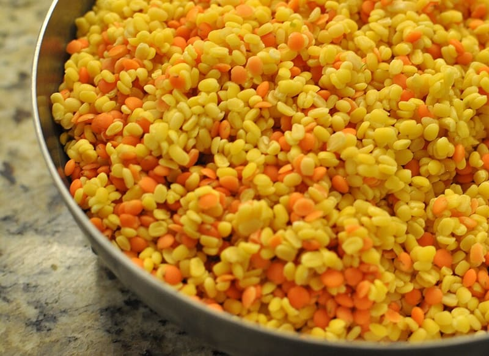
Rote-Linsen-Dal
681 kcal · 40 g Protein
681 kcal · 40 g Protein

Chana Masala
670 kcal · 35 g Protein
670 kcal · 35 g Protein

Grünes Thai-Curry mit Hähnchen
640 kcal · 50 g Protein
640 kcal · 50 g Protein

Rotes Curry mit Garnelen
613 kcal · 44 g Protein
613 kcal · 44 g Protein

Pad Thai mit Hähnchen
693 kcal · 51 g Protein
693 kcal · 51 g Protein

Hähnchen-Teriyaki mit Reis
564 kcal · 43 g Protein
564 kcal · 43 g Protein
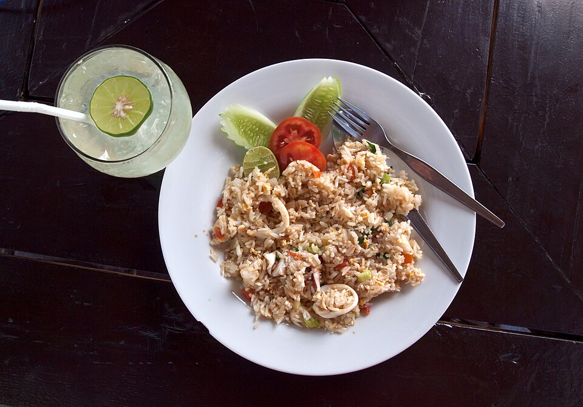
Gebratener Reis mit Ei & Hähnchen
683 kcal · 52 g Protein
683 kcal · 52 g Protein
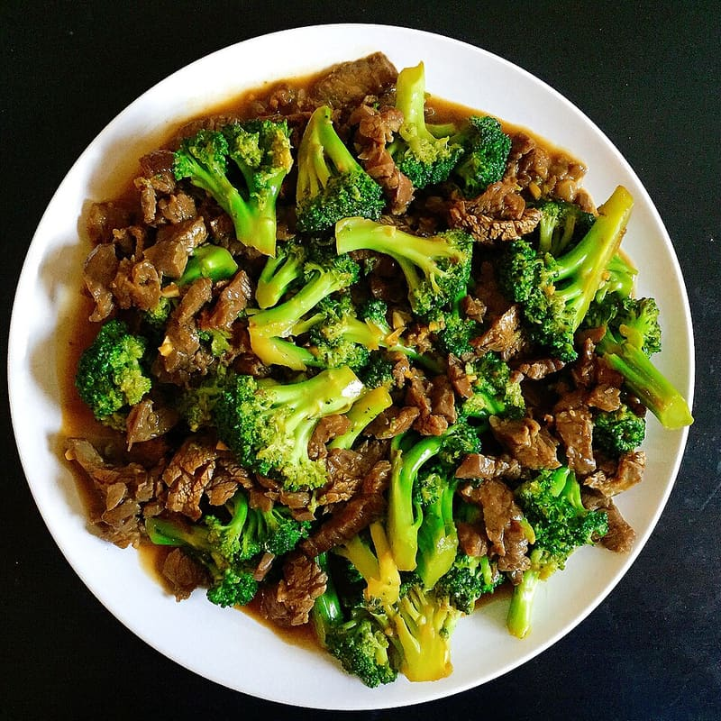
Rindfleisch mit Brokkoli
634 kcal · 50 g Protein
634 kcal · 50 g Protein

Teriyaki-Lachs mit Pak Choi
601 kcal · 39 g Protein
601 kcal · 39 g Protein
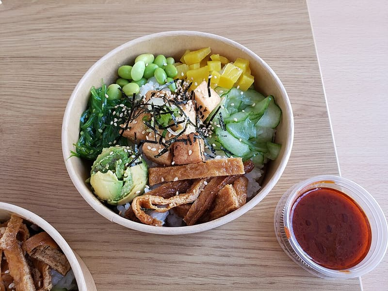
Poke Bowl mit Lachs
694 kcal · 41 g Protein
694 kcal · 41 g Protein
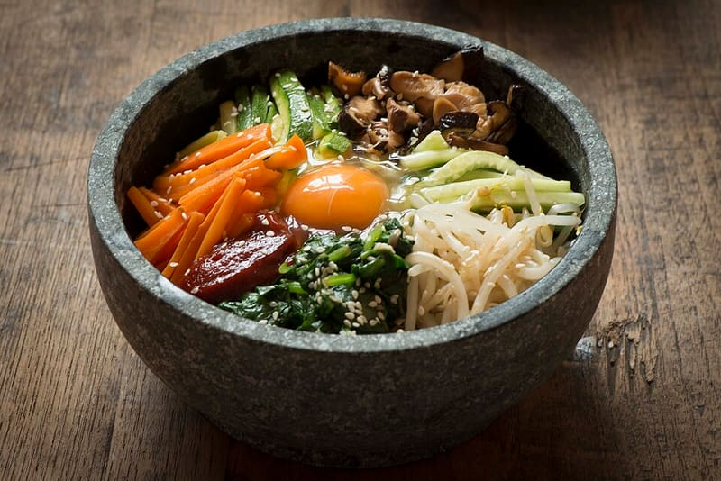
Bibimbap
641 kcal · 46 g Protein
641 kcal · 46 g Protein
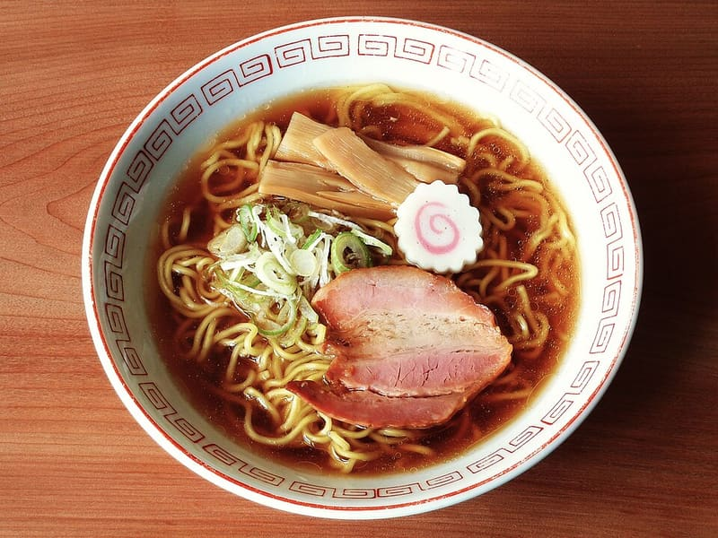
Ramen mit Hähnchen & Ei
678 kcal · 52 g Protein
678 kcal · 52 g Protein

Hähnchen-Satay mit Erdnusssauce
691 kcal · 54 g Protein
691 kcal · 54 g Protein

Pho mit Rindfleisch
525 kcal · 44 g Protein
525 kcal · 44 g Protein

Knuspriger Tofu-Stir-Fry
684 kcal · 40 g Protein
684 kcal · 40 g Protein

Kung Pao Hähnchen
674 kcal · 53 g Protein
674 kcal · 53 g Protein

Japanisches Katsu-Curry mit Hähnchen
693 kcal · 50 g Protein
693 kcal · 50 g Protein
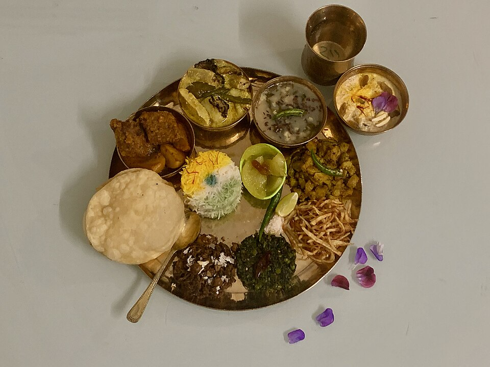
Süßkartoffel-Kichererbsen-Curry
670 kcal · 33 g Protein
670 kcal · 33 g Protein
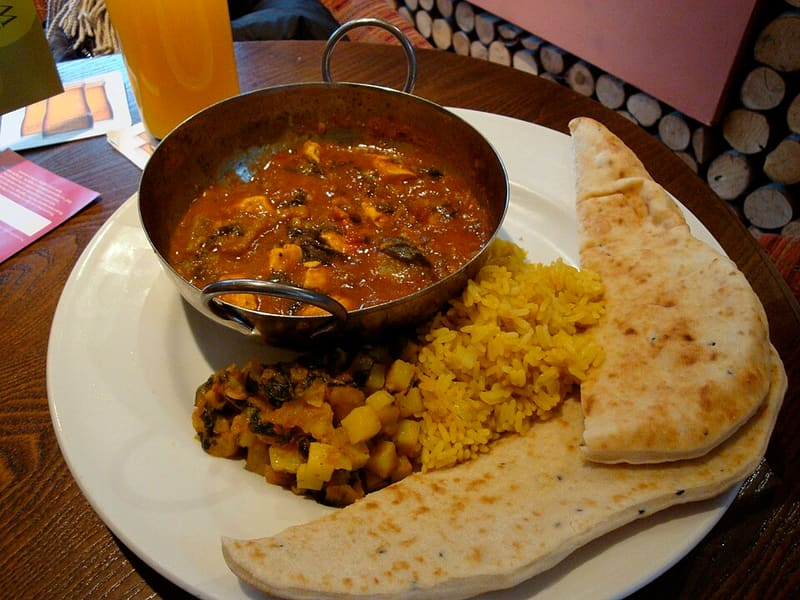
Saag-Hähnchen (Spinat-Curry)
667 kcal · 59 g Protein
667 kcal · 59 g Protein

Tandoori-Hähnchen mit Raita
656 kcal · 64 g Protein
656 kcal · 64 g Protein

Mildes Hähnchen-Korma
674 kcal · 56 g Protein
674 kcal · 56 g Protein

Chow Mein mit Hähnchen
601 kcal · 45 g Protein
601 kcal · 45 g Protein
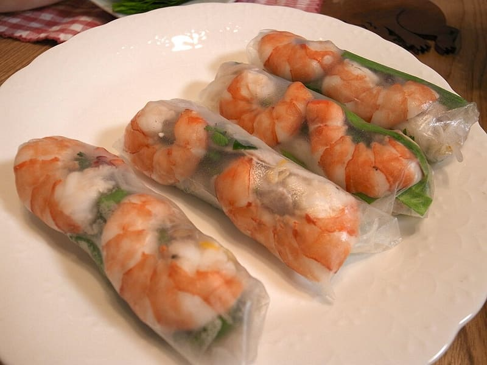
Sommerrollen mit Garnelen & Erdnussdip
556 kcal · 39 g Protein
556 kcal · 39 g Protein

Käsekuchen ohne Boden (Protein, Vanille)
189 kcal · 25 g Protein
189 kcal · 25 g Protein

Schoko-Käsekuchen ohne Boden
236 kcal · 28 g Protein
236 kcal · 28 g Protein
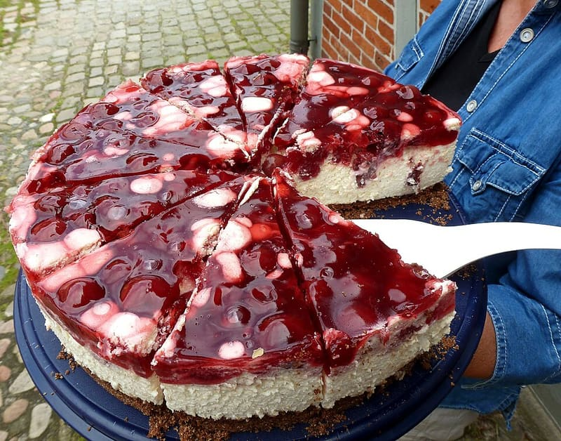
Kirsch-Käsekuchen ohne Boden
203 kcal · 23 g Protein
203 kcal · 23 g Protein

Pfirsich-Schmand-Käsekuchen ohne Boden
202 kcal · 21 g Protein
202 kcal · 21 g Protein

New York Cheesecake light mit Mandelboden
269 kcal · 29 g Protein
269 kcal · 29 g Protein

Käsekuchen-Muffins mit Himbeeren
173 kcal · 21 g Protein
173 kcal · 21 g Protein

Saftige Schoko-Protein-Muffins
291 kcal · 25 g Protein
291 kcal · 25 g Protein

Apfel-Zimt-Protein-Muffins
272 kcal · 25 g Protein
272 kcal · 25 g Protein

Rüblikuchen-Protein-Muffins
300 kcal · 29 g Protein
300 kcal · 29 g Protein

Black Bean Brownies (Protein)
238 kcal · 19 g Protein
238 kcal · 19 g Protein
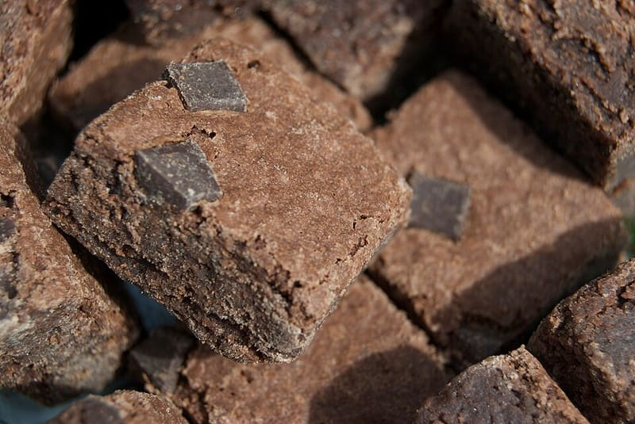
Quark-Protein-Brownies
240 kcal · 28 g Protein
240 kcal · 28 g Protein

Süßkartoffel-Brownies
243 kcal · 21 g Protein
243 kcal · 21 g Protein

Kichererbsen-Blondies mit Schokostücken
240 kcal · 19 g Protein
240 kcal · 19 g Protein

Erdnuss-Protein-Blondies
251 kcal · 28 g Protein
251 kcal · 28 g Protein

Schoko-Bananenbrot mit Protein
269 kcal · 20 g Protein
269 kcal · 20 g Protein
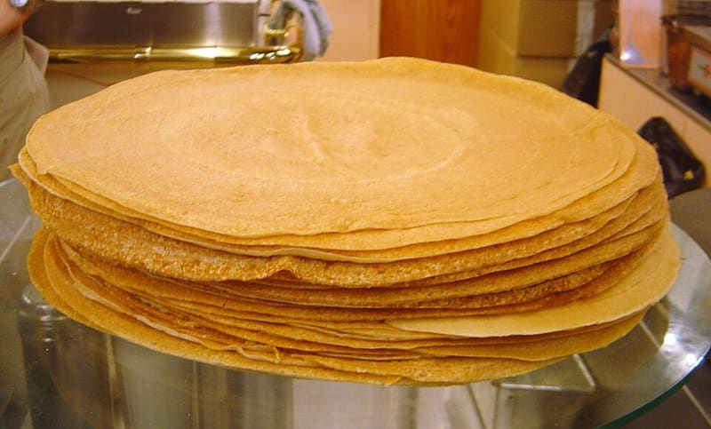
Schoko-Protein-Crêpes mit Banane
292 kcal · 23 g Protein
292 kcal · 23 g Protein
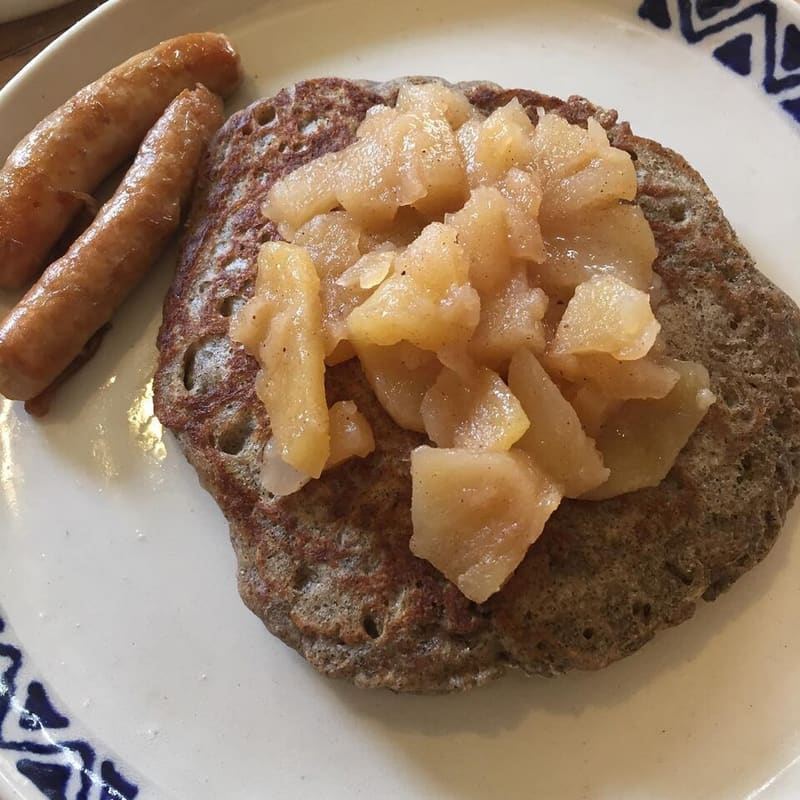
Süße Buchweizen-Crêpes mit Apfelkompott & Skyr
292 kcal · 22 g Protein
292 kcal · 22 g Protein

Dutch Baby (Ofenpfannkuchen) mit Äpfeln
293 kcal · 22 g Protein
293 kcal · 22 g Protein
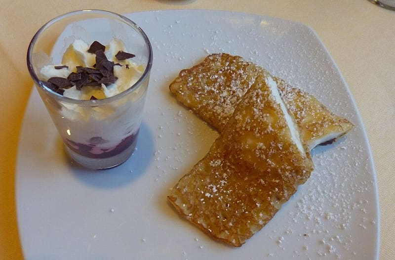
Überbackene Topfenpalatschinken
251 kcal · 23 g Protein
251 kcal · 23 g Protein

Protein-Vanilleeis mit Chunky Flavour
191 kcal · 26 g Protein
191 kcal · 26 g Protein

Erdbeer-Frozen-Yogurt mit Protein
180 kcal · 22 g Protein
180 kcal · 22 g Protein

Espresso-Panna-Cotta mit ESN Flexpresso
196 kcal · 28 g Protein
196 kcal · 28 g Protein
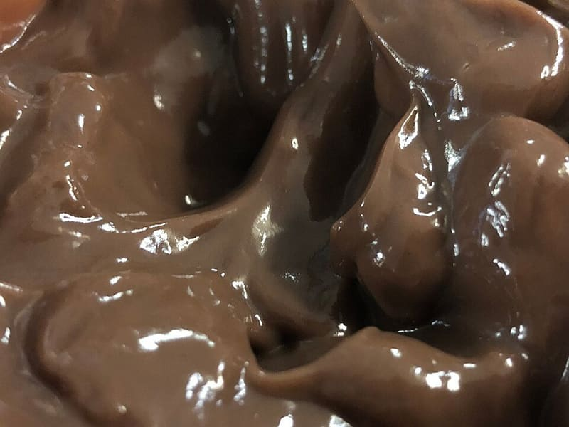
Selbstgemachter Protein-Schokopudding
255 kcal · 21 g Protein
255 kcal · 21 g Protein
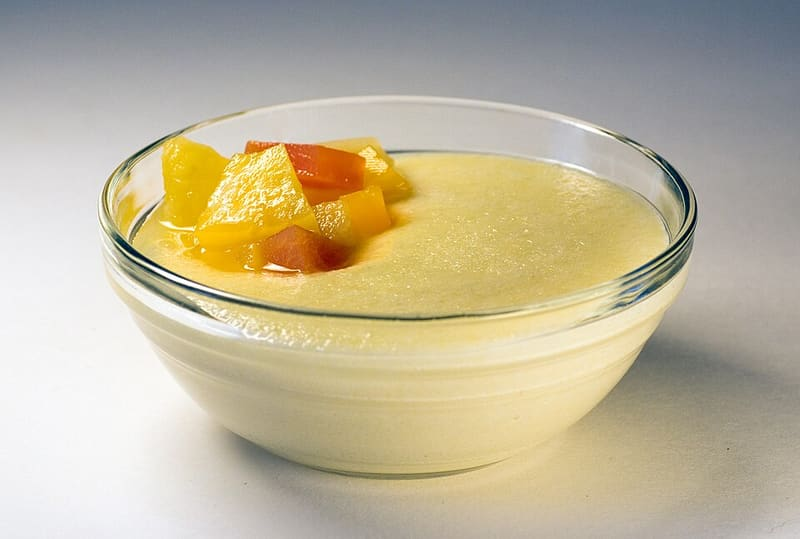
Polenta-Grießbrei mit Sauerkirschen
276 kcal · 20 g Protein
276 kcal · 20 g Protein
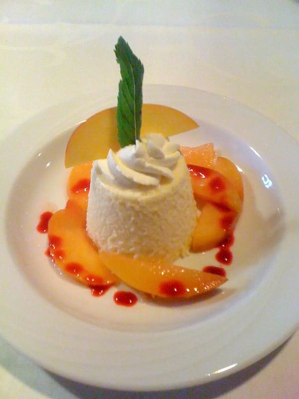
Hirse-Flammeri mit Erdbeeren
262 kcal · 21 g Protein
262 kcal · 21 g Protein
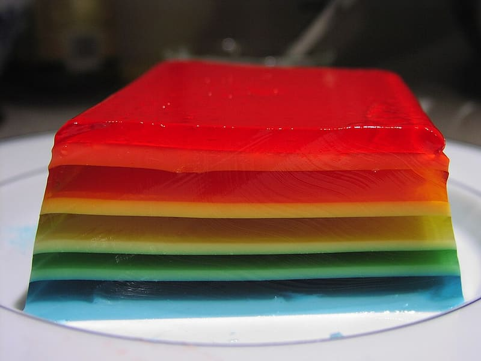
Orangen-Götterspeise mit Vanilleschaum
166 kcal · 25 g Protein
166 kcal · 25 g Protein
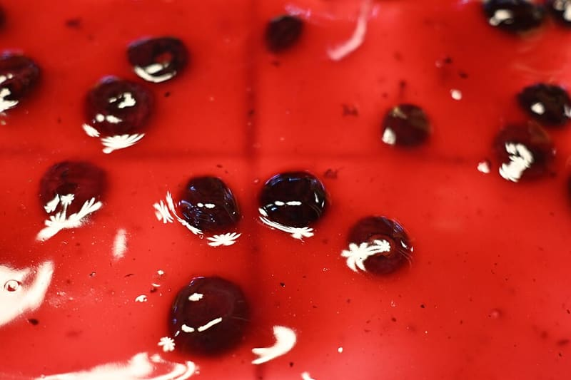
Kirsch-Wackelpudding mit Vanillequark-Haube
150 kcal · 18 g Protein
150 kcal · 18 g Protein
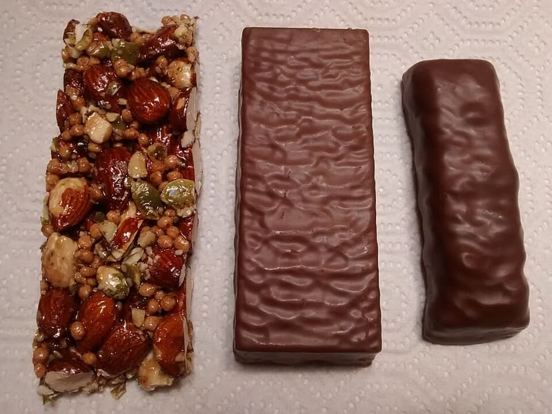
Schoko-Erdnuss-Proteinriegel (no bake)
262 kcal · 18 g Protein
262 kcal · 18 g Protein

Gebackene Apfel-Hafer-Proteinriegel
241 kcal · 23 g Protein
241 kcal · 23 g Protein

Erdnuss-Schoko-Protein-Bites mit Chunky Flavour
226 kcal · 17 g Protein
226 kcal · 17 g Protein

Frozen Cheesecake Bites mit Schokoboden
192 kcal · 20 g Protein
192 kcal · 20 g Protein

Protein-Schoko-Lava-Cake
250 kcal · 23 g Protein
250 kcal · 23 g Protein
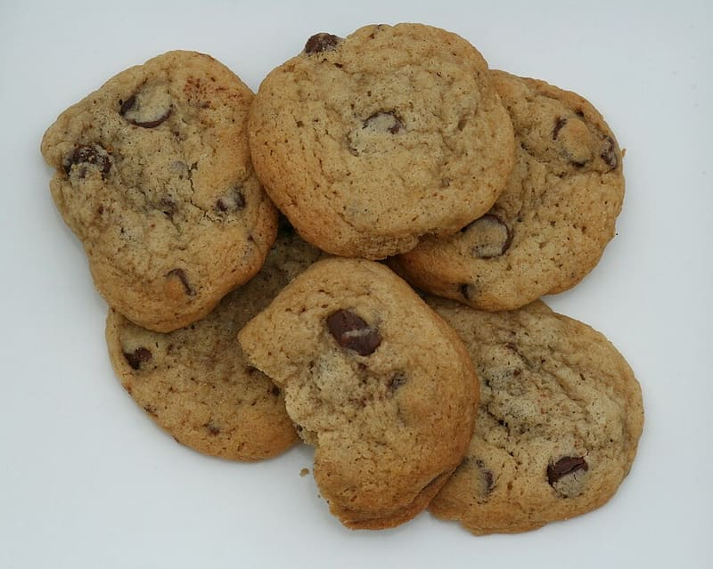
Protein-Cookies mit Schokostückchen
234 kcal · 22 g Protein
234 kcal · 22 g Protein

Apfel-Crumble mit Protein-Streuseln
275 kcal · 22 g Protein
275 kcal · 22 g Protein
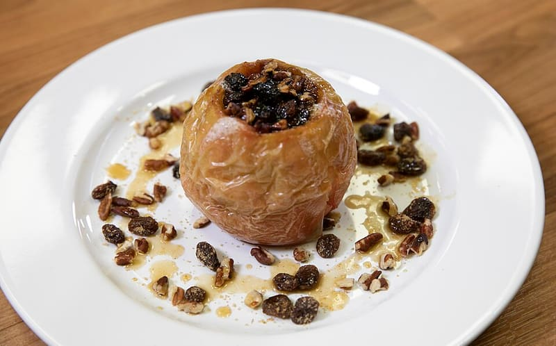
Bratapfel mit Protein-Quarkfüllung
270 kcal · 21 g Protein
270 kcal · 21 g Protein
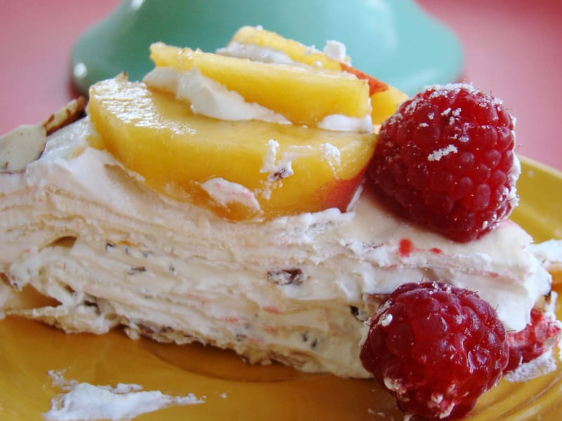
Erdbeer-Pfannkuchen-Torte mit Skyr
270 kcal · 24 g Protein
270 kcal · 24 g Protein

Birnen-Clafoutis mit Mandel
252 kcal · 20 g Protein
252 kcal · 20 g Protein
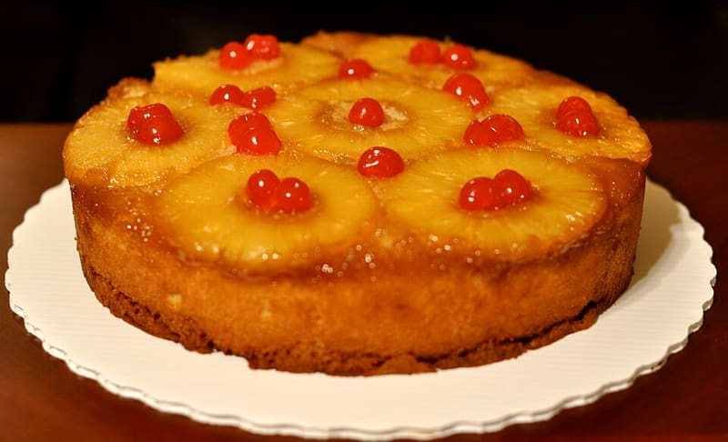
Ananas-Upside-Down-Cake (light)
211 kcal · 22 g Protein
211 kcal · 22 g Protein
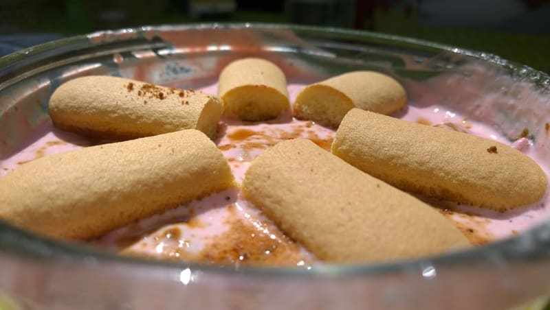
Erdbeerquark wie bei Oma
209 kcal · 26 g Protein
209 kcal · 26 g Protein
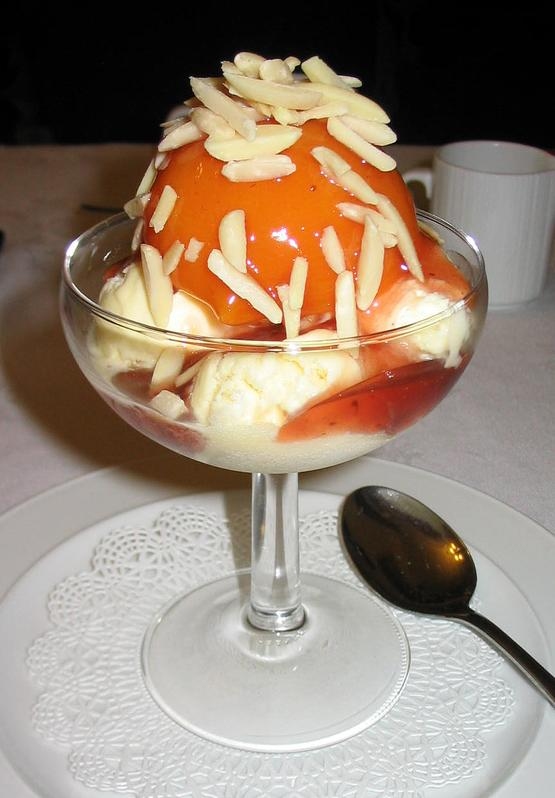
Pfirsich-Melba-Quark
235 kcal · 28 g Protein
235 kcal · 28 g Protein

Banoffee-Quark im Glas
265 kcal · 27 g Protein
265 kcal · 27 g Protein

Bratapfel-Quark
256 kcal · 23 g Protein
256 kcal · 23 g Protein
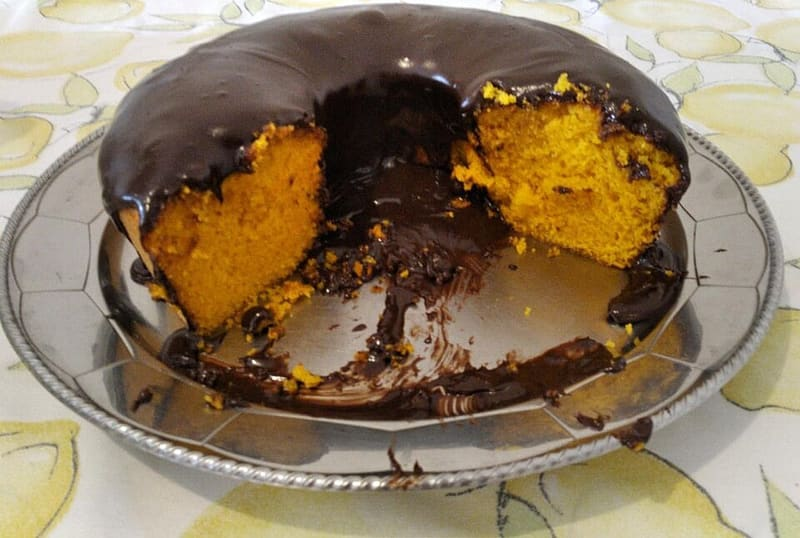
Carrot-Cake-Quark
252 kcal · 27 g Protein
252 kcal · 27 g Protein

Pumpkin-Pie-Creme im Glas
248 kcal · 27 g Protein
248 kcal · 27 g Protein
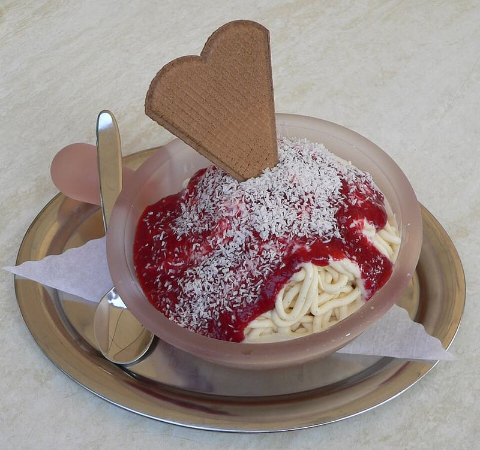
Spaghettieis-Dessert aus Quark
225 kcal · 27 g Protein
225 kcal · 27 g Protein

Lemon-Curd-Skyr
184 kcal · 28 g Protein
184 kcal · 28 g Protein
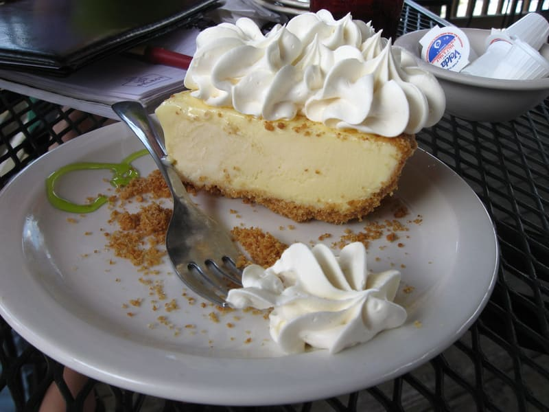
Key-Lime-Pie im Glas
235 kcal · 24 g Protein
235 kcal · 24 g Protein
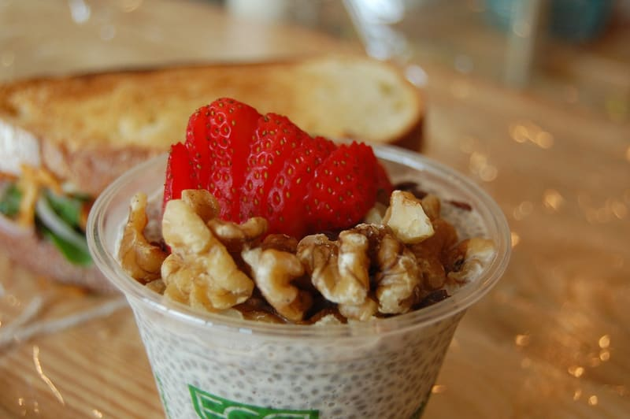
Erdbeer-Chia-Schichtdessert
227 kcal · 24 g Protein
227 kcal · 24 g Protein

Protein-Mousse au Chocolat
220 kcal · 27 g Protein
220 kcal · 27 g Protein
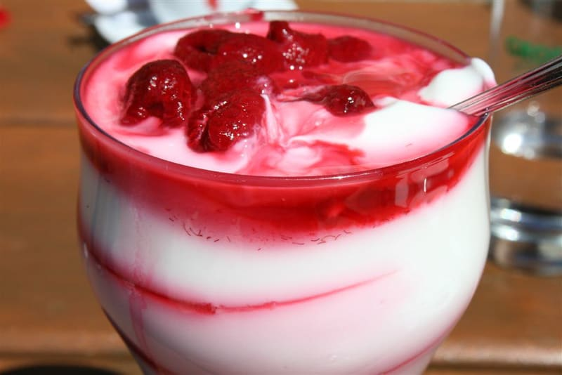
Erdbeer-Mousse
198 kcal · 26 g Protein
198 kcal · 26 g Protein
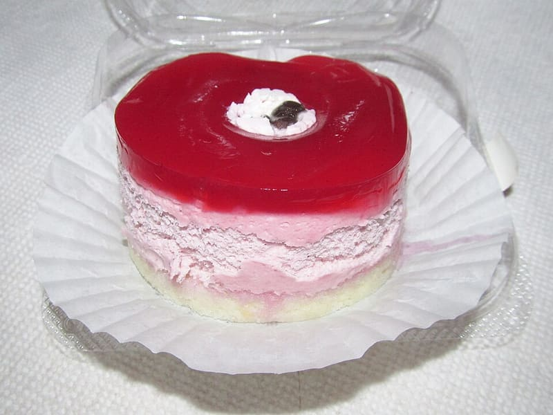
Himbeer-Joghurt-Mousse
211 kcal · 27 g Protein
211 kcal · 27 g Protein
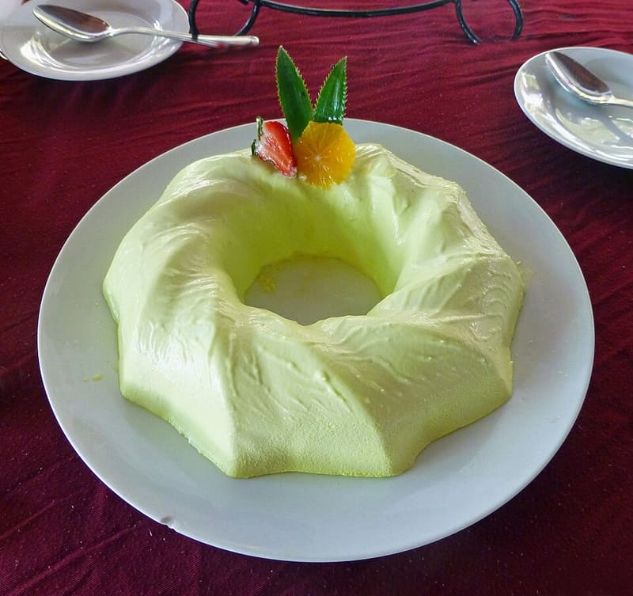
Zitronen-Mousse
190 kcal · 34 g Protein
190 kcal · 34 g Protein

Mango-Mousse
233 kcal · 26 g Protein
233 kcal · 26 g Protein
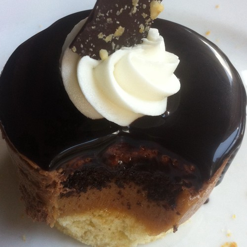
Erdnussbutter-Mousse
281 kcal · 27 g Protein
281 kcal · 27 g Protein
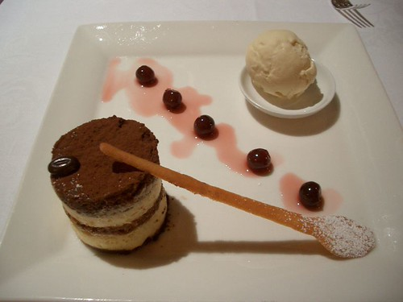
Kirsch-Tiramisu mit Schoko
249 kcal · 28 g Protein
249 kcal · 28 g Protein
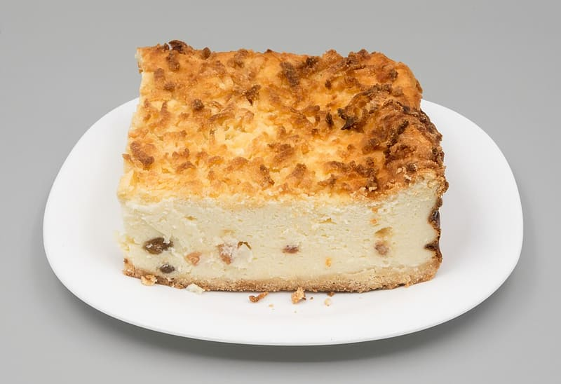
Lemon-Cheesecake-Creme im Glas
250 kcal · 26 g Protein
250 kcal · 26 g Protein

Strawberry Cheesecake Jar
247 kcal · 25 g Protein
247 kcal · 25 g Protein
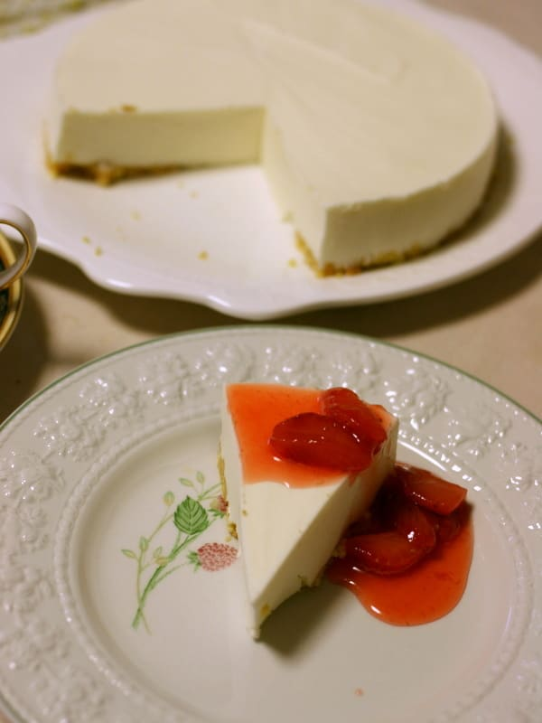
Blaubeer-Cheesecake-Creme
296 kcal · 33 g Protein
296 kcal · 33 g Protein
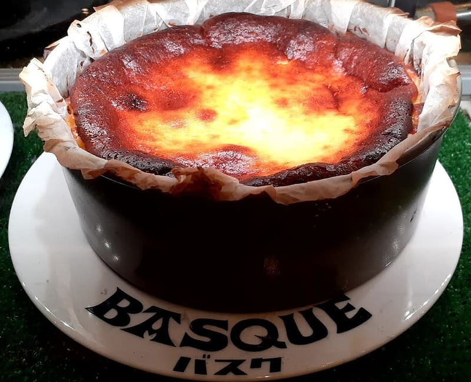
Pfirsich-Käsekuchencreme
264 kcal · 26 g Protein
264 kcal · 26 g Protein

Hüttenkäse-Cheesecake-Whip mit Beeren
252 kcal · 26 g Protein
252 kcal · 26 g Protein
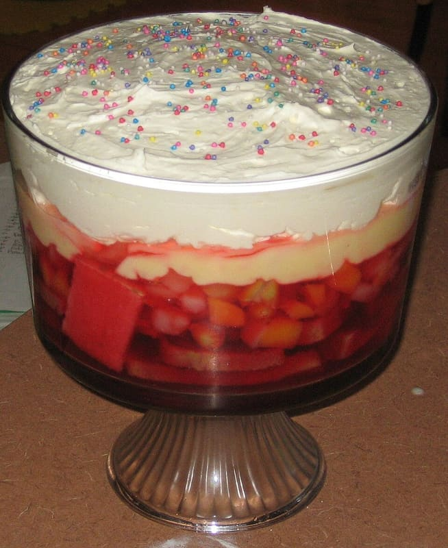
Englisches Beeren-Trifle
244 kcal · 25 g Protein
244 kcal · 25 g Protein
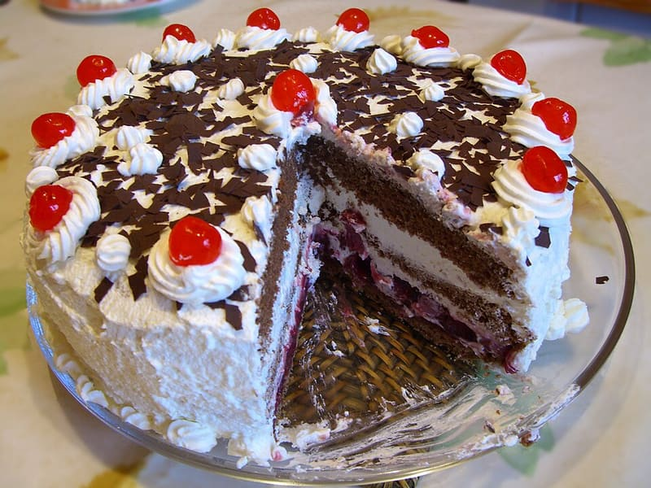
Schwarzwälder-Kirsch-Trifle
286 kcal · 29 g Protein
286 kcal · 29 g Protein

Apple-Crumble-Trifle
268 kcal · 25 g Protein
268 kcal · 25 g Protein

Eton Mess mit Skyr
226 kcal · 24 g Protein
226 kcal · 24 g Protein

Rote Grütze mit Vanillequark
241 kcal · 25 g Protein
241 kcal · 25 g Protein

Herrencreme (leicht, alkoholfrei)
252 kcal · 27 g Protein
252 kcal · 27 g Protein

Vanillepudding mit heißen Himbeeren
270 kcal · 29 g Protein
270 kcal · 29 g Protein
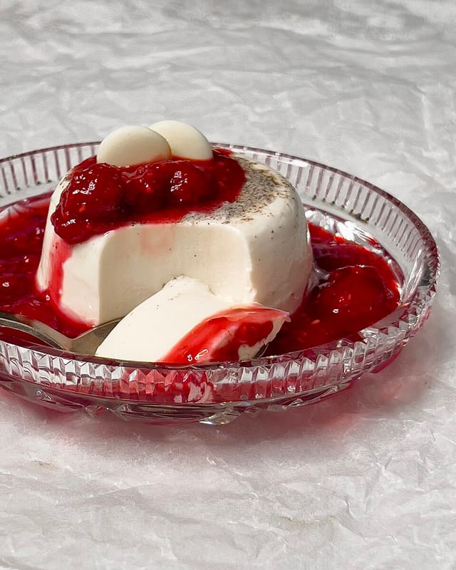
Protein-Panna-Cotta mit Erdbeersauce
235 kcal · 31 g Protein
235 kcal · 31 g Protein

Kokos-Panna-Cotta mit Mango
218 kcal · 21 g Protein
218 kcal · 21 g Protein

Himbeer-Kokos-Quark-Bowl
250 kcal · 26 g Protein
250 kcal · 26 g Protein
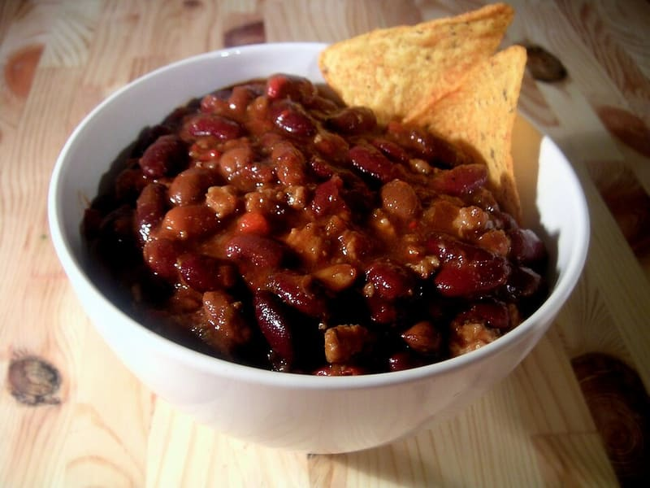
Chili con carne
690 kcal · 48 g Protein
690 kcal · 48 g Protein

Chili sin carne
700 kcal · 41 g Protein
700 kcal · 41 g Protein

Rindfleisch-Tacos
617 kcal · 45 g Protein
617 kcal · 45 g Protein

Garnelen-Tacos
557 kcal · 44 g Protein
557 kcal · 44 g Protein

Burrito-Bowl mit Hähnchen
665 kcal · 54 g Protein
665 kcal · 54 g Protein
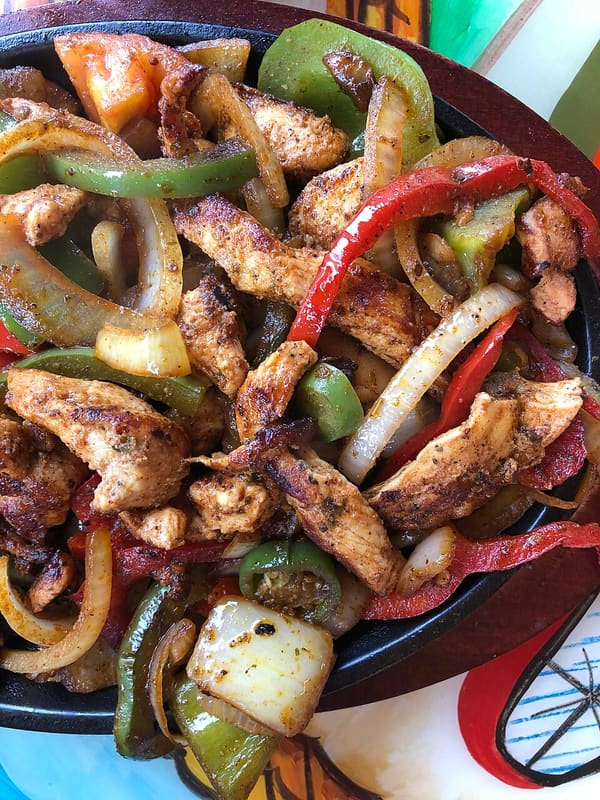
Hähnchen-Fajitas
584 kcal · 51 g Protein
584 kcal · 51 g Protein

Hähnchen-Quesadillas
578 kcal · 52 g Protein
578 kcal · 52 g Protein
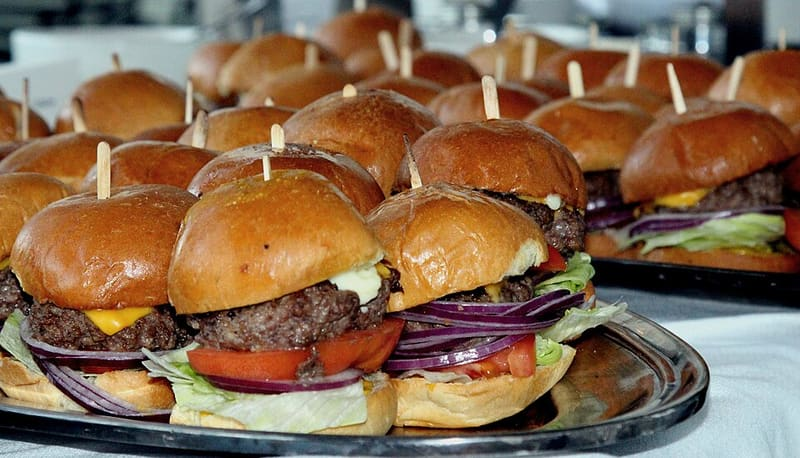
Protein-Burger
674 kcal · 45 g Protein
674 kcal · 45 g Protein
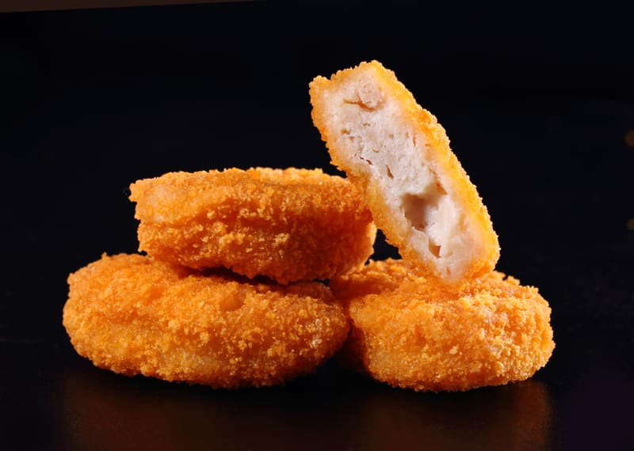
Ofen-Hähnchen-Nuggets mit Süßkartoffel-Pommes
640 kcal · 52 g Protein
640 kcal · 52 g Protein

Selbstgemachte Fischstäbchen mit Kartoffelpüree
675 kcal · 45 g Protein
675 kcal · 45 g Protein

Frikadellen mit Kartoffel-Möhren-Stampf
672 kcal · 42 g Protein
672 kcal · 42 g Protein

Pellkartoffeln mit Kräuterquark & Leinsamen
570 kcal · 41 g Protein
570 kcal · 41 g Protein

Hühnerfrikassee mit Reis
616 kcal · 49 g Protein
616 kcal · 49 g Protein
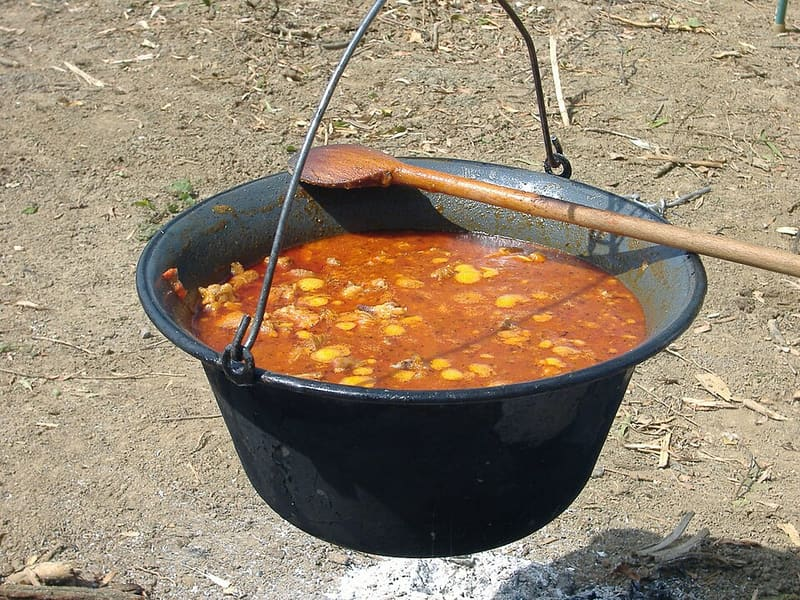
Paprika-Rindergulasch mit Kartoffeln
652 kcal · 46 g Protein
652 kcal · 46 g Protein

Linseneintopf
639 kcal · 36 g Protein
639 kcal · 36 g Protein

Hühnersuppe mit Nudeln & Gemüse
533 kcal · 44 g Protein
533 kcal · 44 g Protein

Kürbissuppe mit roten Linsen
617 kcal · 32 g Protein
617 kcal · 32 g Protein

Zucchini-Puffer mit Joghurt-Dip
655 kcal · 42 g Protein
655 kcal · 42 g Protein
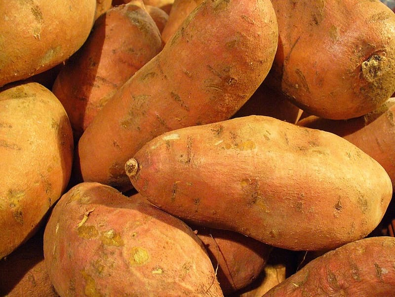
Gefüllte Süßkartoffel mit Hüttenkäse & Bohnen
600 kcal · 35 g Protein
600 kcal · 35 g Protein

Rinder-Stroganoff
656 kcal · 47 g Protein
656 kcal · 47 g Protein
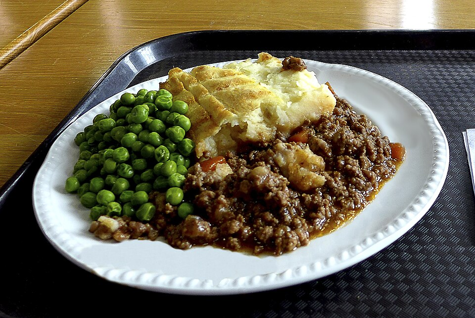
Shepherd's Pie mit Linsen & Hack
667 kcal · 44 g Protein
667 kcal · 44 g Protein

Beeren-Bananen-Protein-Smoothie
303 kcal · 25 g Protein
303 kcal · 25 g Protein
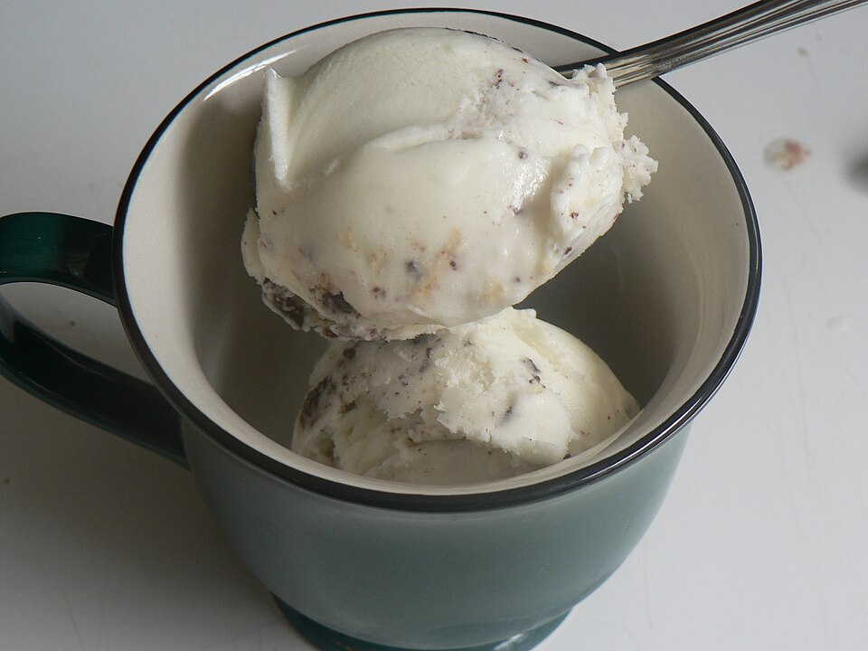
Frozen-Joghurt-Bark mit Beeren
264 kcal · 19 g Protein
264 kcal · 19 g Protein

Reiswaffeln mit Hüttenkäse & Gurke
244 kcal · 21 g Protein
244 kcal · 21 g Protein
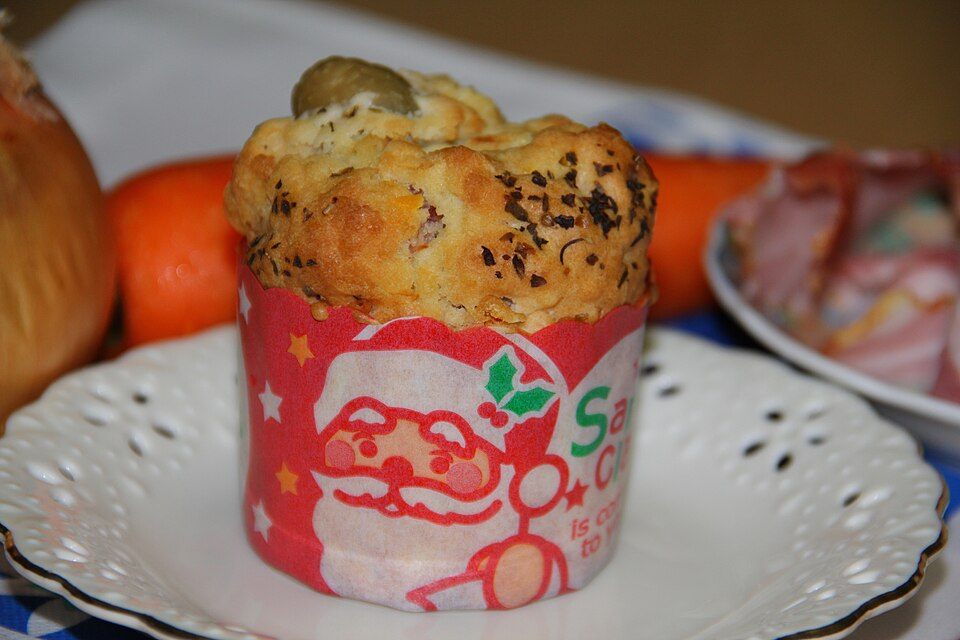
Gemüse-Käse-Muffins
312 kcal · 26 g Protein
312 kcal · 26 g Protein

Kabeljau in Senfsauce mit Salzkartoffeln
504 kcal · 45 g Protein
504 kcal · 45 g Protein
Fish Tacos mit Kabeljau & Limetten-Krautsalat
517 kcal · 43 g Protein
517 kcal · 43 g Protein
Gedämpfter Kabeljau mit Ingwer & Frühlingszwiebeln
466 kcal · 45 g Protein
466 kcal · 45 g Protein

Indisches Fischcurry mit Kabeljau & Blumenkohl
549 kcal · 45 g Protein
549 kcal · 45 g Protein

Norddeutsche Fischsuppe mit Seelachs
443 kcal · 41 g Protein
443 kcal · 41 g Protein

Fischpfanne mit Seelachs, Gemüse & Reis
559 kcal · 45 g Protein
559 kcal · 45 g Protein

Fischfrikadellen mit Kartoffel-Gurken-Salat
524 kcal · 43 g Protein
524 kcal · 43 g Protein

Schlemmerfilet selbstgemacht mit Reis & Salat
538 kcal · 47 g Protein
538 kcal · 47 g Protein

Moqueca – brasilianischer Fischtopf mit Kokos
537 kcal · 41 g Protein
537 kcal · 41 g Protein

Fischgulasch mit Seelachs & Paprika
518 kcal · 44 g Protein
518 kcal · 44 g Protein
Lachs mit Kräuterkruste & Ofengemüse
613 kcal · 37 g Protein
613 kcal · 37 g Protein

Lachs-Quinoa-Salat mit Avocado & Rucola
559 kcal · 35 g Protein
559 kcal · 35 g Protein

Lachsfrikadellen mit Gurken-Skyr-Dip & Kartoffeln
602 kcal · 45 g Protein
602 kcal · 45 g Protein

Forelle Müllerin (glutenfrei)
547 kcal · 46 g Protein
547 kcal · 46 g Protein

Forelle mit Mandeln & grünen Bohnen
513 kcal · 45 g Protein
513 kcal · 45 g Protein

Gebratene Forelle auf lauwarmem Kartoffelsalat mit Radieschen
485 kcal · 47 g Protein
485 kcal · 47 g Protein

Forellen-Bowl mit Rote Bete, Quinoa & Feta
564 kcal · 47 g Protein
564 kcal · 47 g Protein
Gebratener Zander mit Kürbisrisotto
550 kcal · 42 g Protein
550 kcal · 42 g Protein
Zander mit Blumenkohlpüree & Rahmspinat
414 kcal · 52 g Protein
414 kcal · 52 g Protein

Dorade aus dem Ofen mit Fenchel & Tomaten
521 kcal · 47 g Protein
521 kcal · 47 g Protein

Dorade mit Zitronen-Couscous & Gemüse
516 kcal · 47 g Protein
516 kcal · 47 g Protein

Dorade mit Mango-Salsa & Kokosreis
505 kcal · 41 g Protein
505 kcal · 41 g Protein

Ceviche von der Dorade mit Süßkartoffel & Mais
538 kcal · 46 g Protein
538 kcal · 46 g Protein

Bouillabaisse light
580 kcal · 53 g Protein
580 kcal · 53 g Protein

Thunfischsteak mit weißen Bohnen & Rucola
440 kcal · 52 g Protein
440 kcal · 52 g Protein
Thunfisch-Tataki mit Gurken-Sesam-Salat & Reis
513 kcal · 47 g Protein
513 kcal · 47 g Protein

Salade Niçoise mit Thunfisch & Ei
480 kcal · 43 g Protein
480 kcal · 43 g Protein

Gambas al Ajillo mit Ofenkartoffeln & Salat
462 kcal · 40 g Protein
462 kcal · 40 g Protein
Garnelen-Brokkoli-Pfanne mit Reisnudeln
529 kcal · 41 g Protein
529 kcal · 41 g Protein

Cajun-Garnelen-Bowl mit Bohnen, Mais & Avocado
561 kcal · 44 g Protein
561 kcal · 44 g Protein

Tom Yum mit Garnelen & Glasnudeln
440 kcal · 37 g Protein
440 kcal · 37 g Protein
Garnelen-Spargel-Risotto mit Zitrone
499 kcal · 41 g Protein
499 kcal · 41 g Protein
Garnelen Saganaki mit Tomaten & Feta
548 kcal · 43 g Protein
548 kcal · 43 g Protein
Tafelspitz-Art von der Rinderhüfte mit Wurzelgemüse & Schnittlauchsauce
481 kcal · 53 g Protein
481 kcal · 53 g Protein

Schnitzel glutenfrei paniert mit Gurken-Kartoffelsalat
610 kcal · 45 g Protein
610 kcal · 45 g Protein
Schweinefilet-Medaillons mit Pfeffersauce, Bohnen & Kartoffeln
519 kcal · 45 g Protein
519 kcal · 45 g Protein

Köttbullar light mit Rahmsauce, Kartoffelpüree & Beerenkompott
606 kcal · 44 g Protein
606 kcal · 44 g Protein

Cevapcici mit Ajvar-Paprika, Reis & Joghurt-Dip
595 kcal · 42 g Protein
595 kcal · 42 g Protein

Lamm-Rind-Kofta mit Minz-Joghurt & Tomaten-Quinoa
600 kcal · 46 g Protein
600 kcal · 46 g Protein

Bulgogi (koreanisches Rindfleisch) mit Reis & Gurkensalat
595 kcal · 44 g Protein
595 kcal · 44 g Protein

Beef Stir-Fry mit Paprika, Zuckerschoten & Reisnudeln
564 kcal · 43 g Protein
564 kcal · 43 g Protein
Picadillo (kubanische Hackpfanne) mit Reis
623 kcal · 41 g Protein
623 kcal · 41 g Protein

Carne Asada Bowl mit Reis, Bohnen & Pico de Gallo
629 kcal · 48 g Protein
629 kcal · 48 g Protein

Saftiger Hackbraten mit Ofengemüse & Kartoffeln
553 kcal · 42 g Protein
553 kcal · 42 g Protein

Kohlrouladen mit Rinderhack, Reis & Tomatensauce
569 kcal · 43 g Protein
569 kcal · 43 g Protein
Gefüllte Zucchini mit Rinderhack, Tomate & Feta
561 kcal · 46 g Protein
561 kcal · 46 g Protein
Steak-Salat mit Rucola, Ofenkartoffeln & Balsamico
539 kcal · 46 g Protein
539 kcal · 46 g Protein

Ungarische Gulaschsuppe mit Rindfleisch & Kartoffeln
629 kcal · 46 g Protein
629 kcal · 46 g Protein
Zürcher Geschnetzeltes light mit Rösti
551 kcal · 45 g Protein
551 kcal · 45 g Protein
Schweinefilet süß-sauer mit Ananas & Reis
626 kcal · 43 g Protein
626 kcal · 43 g Protein
Gyros-Pfanne vom Schweineschnitzel mit Tzatziki & Reis
578 kcal · 50 g Protein
578 kcal · 50 g Protein
Hack-Gnocchi-Pfanne mit Spinat & Tomaten
617 kcal · 43 g Protein
617 kcal · 43 g Protein

Hüftsteak mit Süßkartoffel-Wedges & Kräuterquark-Dip
536 kcal · 52 g Protein
536 kcal · 52 g Protein
Larb (thailändischer Hacksalat) mit Rinderhack & Klebreis
542 kcal · 41 g Protein
542 kcal · 41 g Protein

Mapo Tofu mit Rinderhack & Reis
639 kcal · 46 g Protein
639 kcal · 46 g Protein
Gyudon (japanische Rindfleisch-Reisschale) mit Ei
583 kcal · 47 g Protein
583 kcal · 47 g Protein
Keema Matar (indisches Hack-Erbsen-Curry) mit Reis
624 kcal · 46 g Protein
624 kcal · 46 g Protein
Leichtes Rinder-Madras-Curry mit Spinat & Basmatireis
624 kcal · 44 g Protein
624 kcal · 44 g Protein

Lamm-Rogan-Josh light mit Basmatireis & Raita
621 kcal · 44 g Protein
621 kcal · 44 g Protein
Lamm-Tajine mit Kichererbsen, Datteln & Couscous
630 kcal · 45 g Protein
630 kcal · 45 g Protein

Käse-Lauch-Suppe light mit Rinderhack
568 kcal · 44 g Protein
568 kcal · 44 g Protein

Kartoffel-Hack-Auflauf mit Brokkoli
577 kcal · 50 g Protein
577 kcal · 50 g Protein
Königsberger Klopse light mit Kartoffeln & Rote-Bete-Salat
522 kcal · 42 g Protein
522 kcal · 42 g Protein
Rinderhüfte mit Rosenkohl & Kartoffel-Sellerie-Stampf
511 kcal · 48 g Protein
511 kcal · 48 g Protein
Schweinefilet mit Fenchel-Orangen-Gemüse & Quinoa
552 kcal · 47 g Protein
552 kcal · 47 g Protein

Schweine-Saltimbocca mit Zitronenspinat & Gnocchi
586 kcal · 48 g Protein
586 kcal · 48 g Protein

Sloppy Joes light mit Coleslaw
557 kcal · 40 g Protein
557 kcal · 40 g Protein

Enchiladas mit Rinderhack & schwarzen Bohnen
593 kcal · 47 g Protein
593 kcal · 47 g Protein

Pad Kra Pao mit Rinderhack, Bohnen & Spiegelei
576 kcal · 44 g Protein
576 kcal · 44 g Protein
Rinderschmorgulasch Ossobuco-Art mit Gremolata & Polenta
610 kcal · 46 g Protein
610 kcal · 46 g Protein

Char Siu Schweinefilet mit Pak Choi & Reis
542 kcal · 46 g Protein
542 kcal · 46 g Protein

Beef Rendang light mit Reis & Gurke
645 kcal · 43 g Protein
645 kcal · 43 g Protein
Hambagu (japanisches Hacksteak) mit Pilzsauce & Reis
599 kcal · 46 g Protein
599 kcal · 46 g Protein

Protein-Porridge mit Beeren
480 kcal · 36 g Protein
480 kcal · 36 g Protein

Overnight Oats mit Skyr
444 kcal · 29 g Protein
444 kcal · 29 g Protein

Shakshuka
530 kcal · 26 g Protein
530 kcal · 26 g Protein

Rührei mit Spinat auf Vollkorntoast
415 kcal · 24 g Protein
415 kcal · 24 g Protein
Skyr-Beeren-Bowl mit Granola
405 kcal · 32 g Protein
405 kcal · 32 g Protein

Protein-Pancakes
515 kcal · 40 g Protein
515 kcal · 40 g Protein

Bananen-Hafer-Pancakes (3 Zutaten)
441 kcal · 22 g Protein
441 kcal · 22 g Protein

Avocado-Toast mit pochiertem Ei
448 kcal · 28 g Protein
448 kcal · 28 g Protein

Gemüse-Frittata
492 kcal · 31 g Protein
492 kcal · 31 g Protein

Chia-Pudding mit Mango
381 kcal · 28 g Protein
381 kcal · 28 g Protein

Hüttenkäse-Bowl mit Obst & Nüssen
395 kcal · 35 g Protein
395 kcal · 35 g Protein

Ei-Muffins mit Gemüse
488 kcal · 33 g Protein
488 kcal · 33 g Protein

Protein-Smoothie-Bowl
507 kcal · 40 g Protein
507 kcal · 40 g Protein

Breakfast Burrito
479 kcal · 24 g Protein
479 kcal · 24 g Protein

Protein-French-Toast
487 kcal · 33 g Protein
487 kcal · 33 g Protein

Bircher Müsli
415 kcal · 24 g Protein
415 kcal · 24 g Protein

Omelett mit Tomate & Feta
501 kcal · 30 g Protein
501 kcal · 30 g Protein

Hirsebrei mit Apfel & Zimt
521 kcal · 30 g Protein
521 kcal · 30 g Protein

Quinoa-Frühstücksbowl
455 kcal · 32 g Protein
455 kcal · 32 g Protein
Räucherlachs-Bagel mit Frischkäse
377 kcal · 19 g Protein
377 kcal · 19 g Protein

Hummus mit Gemüsesticks
233 kcal · 7 g Protein
233 kcal · 7 g Protein

Energy Balls
319 kcal · 16 g Protein
319 kcal · 16 g Protein

Protein Mug Cake
301 kcal · 31 g Protein
301 kcal · 31 g Protein

Protein-Bananenbrot
223 kcal · 16 g Protein
223 kcal · 16 g Protein

Edamame mit Meersalz & Sesam
169 kcal · 11 g Protein
169 kcal · 11 g Protein

Eggs Benedict (glutenfrei) mit leichter Hollandaise
480 kcal · 33 g Protein
480 kcal · 33 g Protein
Huevos Rancheros
483 kcal · 26 g Protein
483 kcal · 26 g Protein

Menemen (türkisches Rührei mit Tomate & Paprika)
479 kcal · 27 g Protein
479 kcal · 27 g Protein

Tamagoyaki mit Reis & Gurke
488 kcal · 28 g Protein
488 kcal · 28 g Protein

Congee (Reisbrei) mit Hähnchen & Ei
423 kcal · 38 g Protein
423 kcal · 38 g Protein
Grüne Shakshuka mit Spinat & Zucchini
477 kcal · 31 g Protein
477 kcal · 31 g Protein
Feta-Shakshuka mit Kichererbsen
454 kcal · 27 g Protein
454 kcal · 27 g Protein
Apfelstrudel-Protein-Porridge
481 kcal · 31 g Protein
481 kcal · 31 g Protein
Schoko-Bananen-Protein-Porridge mit Erdnussmus
464 kcal · 31 g Protein
464 kcal · 31 g Protein

Carrot-Cake-Porridge mit Quark
412 kcal · 25 g Protein
412 kcal · 25 g Protein
Herzhafte Quinoa-Frühstücksbowl mit Ei & Avocado
482 kcal · 27 g Protein
482 kcal · 27 g Protein

Spinat-Champignon-Omelett mit Hüttenkäse
477 kcal · 38 g Protein
477 kcal · 38 g Protein
Denver Omelett mit Schinken, Paprika & Cheddar
429 kcal · 35 g Protein
429 kcal · 35 g Protein

Masala-Omelett mit Koriander & Joghurt
371 kcal · 28 g Protein
371 kcal · 28 g Protein

Frühstücks-Wrap mit Rührei, Spinat & Feta
439 kcal · 30 g Protein
439 kcal · 30 g Protein
Schwarzwälder Bircher Müsli mit Kirschen & Kakao
406 kcal · 28 g Protein
406 kcal · 28 g Protein
Quarkbrötchen (glutenfrei) mit körnigem Frischkäse & Schinken
422 kcal · 29 g Protein
422 kcal · 29 g Protein
Hüttenkäse-Pfannkuchen mit Heidelbeeren
464 kcal · 32 g Protein
464 kcal · 32 g Protein

Syrniki (russische Quarkpfannkuchen) mit Himbeeren
391 kcal · 30 g Protein
391 kcal · 30 g Protein
Süßkartoffel-Hash mit Pute & Spiegelei
456 kcal · 31 g Protein
456 kcal · 31 g Protein
Tofu-Scramble-Burrito mit schwarzen Bohnen
403 kcal · 24 g Protein
403 kcal · 24 g Protein
Frühstücks-Burrito mit würzigem Putenhack, Ei & Kartoffel
414 kcal · 29 g Protein
414 kcal · 29 g Protein

Tofu-Scramble mit Gemüse auf Vollkornbrot
450 kcal · 29 g Protein
450 kcal · 29 g Protein

Çılbır (türkische Eier auf Knoblauch-Joghurt)
461 kcal · 31 g Protein
461 kcal · 31 g Protein

Besan Chilla (Kichererbsen-Pfannkuchen) mit Hüttenkäse
343 kcal · 25 g Protein
343 kcal · 25 g Protein
Chilaquiles mit Ei & schwarzen Bohnen
480 kcal · 28 g Protein
480 kcal · 28 g Protein
Frühstückssandwich mit Ei, Schinken & Käse
374 kcal · 23 g Protein
374 kcal · 23 g Protein

Süßkartoffel-Toast mit Hüttenkäse, Avocado & Ei
467 kcal · 31 g Protein
467 kcal · 31 g Protein

Smørrebrød mit Ei, körnigem Frischkäse & Radieschen
403 kcal · 27 g Protein
403 kcal · 27 g Protein

Strammer Max (leicht) mit Schinken & Spiegelei
450 kcal · 28 g Protein
450 kcal · 28 g Protein

Sächsische Quarkkeulchen mit Apfelmus
435 kcal · 23 g Protein
435 kcal · 23 g Protein

Buchweizen-Kascha mit Quark & Zimtapfel
427 kcal · 28 g Protein
427 kcal · 28 g Protein
Protein-Crêpes mit Vanillequark & Erdbeeren
395 kcal · 30 g Protein
395 kcal · 30 g Protein
Baked Oats mit Heidelbeeren
441 kcal · 28 g Protein
441 kcal · 28 g Protein
Tortilla Española (spanisches Kartoffel-Omelett)
456 kcal · 23 g Protein
456 kcal · 23 g Protein

Hähnchen-Geschnetzeltes Zürcher Art mit Rösti
610 kcal · 51 g Protein
610 kcal · 51 g Protein

Putenschnitzel mit Gurken-Kartoffelsalat
614 kcal · 51 g Protein
614 kcal · 51 g Protein
Hähnchen-Piccata milanese mit Tomatenspaghetti
634 kcal · 54 g Protein
634 kcal · 54 g Protein

Puten-Saltimbocca mit cremiger Polenta
568 kcal · 54 g Protein
568 kcal · 54 g Protein
Hähnchen alla Pizzaiola mit Gnocchi
622 kcal · 51 g Protein
622 kcal · 51 g Protein

Pollo al ajillo (Knoblauchhähnchen) mit Ofenkartoffeln
528 kcal · 42 g Protein
528 kcal · 42 g Protein

Arroz con pollo
623 kcal · 44 g Protein
623 kcal · 44 g Protein

Tavuk Şiş mit Bulgur-Pilav
568 kcal · 53 g Protein
568 kcal · 53 g Protein

Puten-Köfte mit Hirtensalat & Joghurtdip
549 kcal · 43 g Protein
549 kcal · 43 g Protein

Tavuk Sote (türkische Hähnchenpfanne) mit Reis
564 kcal · 48 g Protein
564 kcal · 48 g Protein

Musakhan (Sumach-Hähnchen mit Zwiebeln & Fladenbrot)
606 kcal · 47 g Protein
606 kcal · 47 g Protein
Hähnchen-Tajine mit Zitrone & Oliven
625 kcal · 46 g Protein
625 kcal · 46 g Protein

Fattoush-Salat mit gegrilltem Hähnchen
526 kcal · 49 g Protein
526 kcal · 49 g Protein
Yakitori mit Reis & Gurkensalat
588 kcal · 44 g Protein
588 kcal · 44 g Protein

Orangenhähnchen mit Reis & Brokkoli
648 kcal · 54 g Protein
648 kcal · 54 g Protein

Massaman-Curry mit Hähnchen & Kartoffeln
612 kcal · 42 g Protein
612 kcal · 42 g Protein
Pad Kra Pao (Thai-Basilikum-Hähnchen) mit Spiegelei
577 kcal · 51 g Protein
577 kcal · 51 g Protein

Bún mit Zitronengras-Hähnchen
618 kcal · 42 g Protein
618 kcal · 42 g Protein

Dakgalbi (koreanische scharfe Hähnchenpfanne)
639 kcal · 44 g Protein
639 kcal · 44 g Protein
Hähnchen mit Cashewkernen aus dem Wok
633 kcal · 53 g Protein
633 kcal · 53 g Protein
Larb Gai – Thai-Hackfleischsalat mit Pute
558 kcal · 43 g Protein
558 kcal · 43 g Protein

Oyakodon (japanische Hähnchen-Ei-Reisschüssel)
588 kcal · 49 g Protein
588 kcal · 49 g Protein

Hähnchen-Jalfrezi mit Basmatireis
598 kcal · 50 g Protein
598 kcal · 50 g Protein

Hähnchen-Enchiladas mit Bohnen
527 kcal · 53 g Protein
527 kcal · 53 g Protein
Chicken-Tinga-Tostadas mit Avocado
547 kcal · 46 g Protein
547 kcal · 46 g Protein
Mexikanische Hähnchen-Limetten-Suppe (Sopa de lima)
532 kcal · 52 g Protein
532 kcal · 52 g Protein
White Chicken Chili (weißes Hähnchen-Chili)
533 kcal · 53 g Protein
533 kcal · 53 g Protein

BBQ Pulled Chicken mit Coleslaw & Süßkartoffel
582 kcal · 42 g Protein
582 kcal · 42 g Protein
Buffalo-Chicken-Bowl mit Joghurt-Ranch
583 kcal · 52 g Protein
583 kcal · 52 g Protein

Chicken Pot Pie mit Quark-Öl-Teig
571 kcal · 50 g Protein
571 kcal · 50 g Protein

Leichtes Chicken Alfredo mit Brokkoli
638 kcal · 53 g Protein
638 kcal · 53 g Protein
Puten-Hackbraten mit Ofengemüse
614 kcal · 44 g Protein
614 kcal · 44 g Protein

Hähnchen-Brokkoli-Auflauf mit Käsehaube
584 kcal · 59 g Protein
584 kcal · 59 g Protein

Hähnchenkeulen vom Blech mit Rosmarinkartoffeln & Möhren
637 kcal · 44 g Protein
637 kcal · 44 g Protein
Puten-Gnocchi-Auflauf mit Spinat & Tomaten
593 kcal · 52 g Protein
593 kcal · 52 g Protein
Hähnchen-Kartoffel-Gratin mit Lauch
558 kcal · 52 g Protein
558 kcal · 52 g Protein

Asiatischer Glasnudelsalat mit Hähnchen
600 kcal · 51 g Protein
600 kcal · 51 g Protein
Cobb Salad mit Pute
611 kcal · 58 g Protein
611 kcal · 58 g Protein
Avgolemono (griechische Hühner-Zitronen-Suppe)
541 kcal · 53 g Protein
541 kcal · 53 g Protein
Tom Kha Gai (Thai-Kokos-Hühnersuppe)
568 kcal · 49 g Protein
568 kcal · 49 g Protein
Mulligatawny – Curry-Hühnersuppe mit Linsen & Apfel
626 kcal · 52 g Protein
626 kcal · 52 g Protein

Hähnchen-Giouvetsi mit Kritharaki
646 kcal · 44 g Protein
646 kcal · 44 g Protein
Spaghetti Bolognese
683 kcal · 44 g Protein
683 kcal · 44 g Protein

Protein-Lasagne
696 kcal · 57 g Protein
696 kcal · 57 g Protein

Penne mit Lachs & Spinat
683 kcal · 40 g Protein
683 kcal · 40 g Protein

Pesto-Pasta mit Hähnchen
636 kcal · 46 g Protein
636 kcal · 46 g Protein

Gnocchi mit Tomate & Mozzarella
696 kcal · 35 g Protein
696 kcal · 35 g Protein

Spinat-Ricotta-Cannelloni
647 kcal · 45 g Protein
647 kcal · 45 g Protein

Hähnchen-Erbsen-Risotto
683 kcal · 51 g Protein
683 kcal · 51 g Protein

Pasta Primavera mit Garnelen
622 kcal · 40 g Protein
622 kcal · 40 g Protein

Minestrone mit weißen Bohnen
652 kcal · 37 g Protein
652 kcal · 37 g Protein

Protein-Pizza Margherita mit Hähnchen
666 kcal · 44 g Protein
666 kcal · 44 g Protein

Hähnchen Cacciatore
656 kcal · 50 g Protein
656 kcal · 50 g Protein
Polpette (Hackbällchen in Tomatensauce)
684 kcal · 46 g Protein
684 kcal · 46 g Protein
Ratatouille mit Hähnchen
647 kcal · 49 g Protein
647 kcal · 49 g Protein

Paella mit Hähnchen & Garnelen
640 kcal · 49 g Protein
640 kcal · 49 g Protein

Griechischer Hähnchensalat
634 kcal · 53 g Protein
634 kcal · 53 g Protein

Hähnchen-Souvlaki mit Tzatziki
549 kcal · 54 g Protein
549 kcal · 54 g Protein

Leichte Moussaka
633 kcal · 47 g Protein
633 kcal · 47 g Protein

Gefüllte Paprika mit Hack & Reis
610 kcal · 45 g Protein
610 kcal · 45 g Protein

Ofenlachs mit Zitronenkartoffeln & Spargel
616 kcal · 39 g Protein
616 kcal · 39 g Protein
Mediterranes Ofenhähnchen mit Feta & Erbsen
660 kcal · 57 g Protein
660 kcal · 57 g Protein

Thunfisch-Nudelsalat
599 kcal · 43 g Protein
599 kcal · 43 g Protein

Couscous-Salat mit Hähnchen & Feta
670 kcal · 54 g Protein
670 kcal · 54 g Protein
Caesar Salad mit Hähnchen
536 kcal · 54 g Protein
536 kcal · 54 g Protein

Halloumi-Gemüse-Bowl
683 kcal · 38 g Protein
683 kcal · 38 g Protein

Protein Mac and Cheese mit Brokkoli
691 kcal · 40 g Protein
691 kcal · 40 g Protein
Protein-Milchreis mit More „Sahne“ & Beeren
475 kcal · 35 g Protein
475 kcal · 35 g Protein
Protein-Kaiserschmarrn (glutenfrei möglich)
566 kcal · 43 g Protein
566 kcal · 43 g Protein
Protein-Cheesecake im Glas mit ESN Designer Whey
404 kcal · 49 g Protein
404 kcal · 49 g Protein

Proffee Overnight Oats mit ESN Flexpresso
521 kcal · 47 g Protein
521 kcal · 47 g Protein
ESN Isoclear Protein-Wackelpudding mit Beeren
194 kcal · 35 g Protein
194 kcal · 35 g Protein

Protein-Waffeln mit Quark (glutenfrei möglich)
477 kcal · 41 g Protein
477 kcal · 41 g Protein

More Protein Pudding mit Himbeeren & Mandeln
329 kcal · 29 g Protein
329 kcal · 29 g Protein

Skyr-Bowl mit More Chunky Flavour
329 kcal · 31 g Protein
329 kcal · 31 g Protein

Protein-Nicecream (Bananen-Eis) mit ESN Designer Whey
331 kcal · 31 g Protein
331 kcal · 31 g Protein
Protein-Tiramisu im Glas (glutenfrei)
357 kcal · 53 g Protein
357 kcal · 53 g Protein
Protein-Tzatziki mit Paprika- und Kohlrabisticks
265 kcal · 24 g Protein
265 kcal · 24 g Protein

Rote-Bete-Hummus mit Skyr und Kohlrabisticks
242 kcal · 17 g Protein
242 kcal · 17 g Protein
Grüner Edamame-Hummus mit Gurken und Radieschen
289 kcal · 21 g Protein
289 kcal · 21 g Protein

Schwarze-Bohnen-Dip mit Limette und Paprikasticks
221 kcal · 18 g Protein
221 kcal · 18 g Protein

Htipiti – Feta-Paprika-Dip mit Quark
279 kcal · 21 g Protein
279 kcal · 21 g Protein

Hüttenkäse-Guacamole mit Ofen-Maischips
293 kcal · 23 g Protein
293 kcal · 23 g Protein

Thunfischcreme mit Gurken- und Paprikasticks
188 kcal · 27 g Protein
188 kcal · 27 g Protein
Rote-Linsen-Hummus mit Karotten- und Gurkensticks
281 kcal · 17 g Protein
281 kcal · 17 g Protein

Obatzda light mit Harzer und Radieschen
184 kcal · 27 g Protein
184 kcal · 27 g Protein

Harzer mit Musik (Handkäs-Art) und Knäckebrot
233 kcal · 29 g Protein
233 kcal · 29 g Protein

Knusprige Harzer-Käse-Chips mit Skyr-Dip
177 kcal · 34 g Protein
177 kcal · 34 g Protein
Devilled Eggs mit Skyr-Senf-Füllung
213 kcal · 19 g Protein
213 kcal · 19 g Protein
Pizza-Eiermuffins mit Schinken und Mozzarella
285 kcal · 30 g Protein
285 kcal · 30 g Protein

Eiersalat mit Skyr in Gurkenschiffchen
238 kcal · 21 g Protein
238 kcal · 21 g Protein

Ofen-Scotch-Eggs mit Putenhack
258 kcal · 27 g Protein
258 kcal · 27 g Protein

Gegrillte Zucchini-Röllchen mit Ricotta und Schinken
216 kcal · 20 g Protein
216 kcal · 20 g Protein

Salat-Wraps mit Hähnchen und Erdnuss-Limetten-Sauce
247 kcal · 28 g Protein
247 kcal · 28 g Protein

Sesam-Hähnchen-Bites mit Tamari-Ingwer-Dip
254 kcal · 31 g Protein
254 kcal · 31 g Protein

Buffalo-Hähnchen-Bites mit Skyr-Kräuter-Dip und Selleriesticks
240 kcal · 36 g Protein
240 kcal · 36 g Protein

Puten-Zucchini-Bällchen mit Tomatendip
262 kcal · 25 g Protein
262 kcal · 25 g Protein
Caprese-Hähnchen-Spießchen mit Balsamico
239 kcal · 29 g Protein
239 kcal · 29 g Protein
Räucherlachs-Gurken-Häppchen mit Dill-Skyr
170 kcal · 18 g Protein
170 kcal · 18 g Protein

Knoblauch-Garnelen-Spießchen mit Limetten-Skyr-Dip
197 kcal · 29 g Protein
197 kcal · 29 g Protein

Geröstete Kichererbsen und Edamame mit Paprika
243 kcal · 15 g Protein
243 kcal · 15 g Protein
Knäckebrot mit Schnittlauchquark, Ei und Tomate
231 kcal · 19 g Protein
231 kcal · 19 g Protein

Gemüse-Pizzabällchen mit Mozzarella und Tomatendip
274 kcal · 25 g Protein
274 kcal · 25 g Protein
Schoko-Protein-Crispies mit Erdnuss
259 kcal · 19 g Protein
259 kcal · 19 g Protein

Erdbeeren mit Vanillequark-Dip und Schoko-Mandel-Crunch
219 kcal · 21 g Protein
219 kcal · 21 g Protein

Linsen-Bolognese mit Vollkornspaghetti
646 kcal · 31 g Protein
646 kcal · 31 g Protein

Rotes Thai-Curry mit Tofu & Kürbis
639 kcal · 35 g Protein
639 kcal · 35 g Protein

Halloumi-Kichererbsen-Pfanne mit Zucchini
556 kcal · 39 g Protein
556 kcal · 39 g Protein
Spinat-Feta-Auflauf mit Kartoffeln & Ei
630 kcal · 45 g Protein
630 kcal · 45 g Protein
Kichererbsen-Shakshuka mit Feta
650 kcal · 33 g Protein
650 kcal · 33 g Protein

Tempeh-Bowl mit Erdnusssauce
633 kcal · 38 g Protein
633 kcal · 38 g Protein

Weißes Bohnen-Chili mit Mais & Skyr
614 kcal · 41 g Protein
614 kcal · 41 g Protein

Ofengemüse mit Feta & Kichererbsen
607 kcal · 38 g Protein
607 kcal · 38 g Protein
Ofen-Falafel-Bowl mit Tahini-Joghurt (glutenfrei)
636 kcal · 36 g Protein
636 kcal · 36 g Protein
Quinoa-Salat mit Edamame & Feta
607 kcal · 32 g Protein
607 kcal · 32 g Protein

Türkische Linsensuppe (Mercimek) mit Joghurt
547 kcal · 39 g Protein
547 kcal · 39 g Protein

Ribollita mit pochiertem Ei
644 kcal · 37 g Protein
644 kcal · 37 g Protein
Kartoffel-Lauch-Suppe mit Räuchertofu
543 kcal · 38 g Protein
543 kcal · 38 g Protein
Vegetarische Gulaschsuppe mit Sojaschnetzeln
570 kcal · 34 g Protein
570 kcal · 34 g Protein
Tofu-Rührei-Bowl mit Süßkartoffel & Avocado
605 kcal · 38 g Protein
605 kcal · 38 g Protein
Protein-Käsespätzle mit Röstzwiebeln (glutenfrei möglich)
636 kcal · 37 g Protein
636 kcal · 37 g Protein

Gnocchi-Pfanne mit Edamame, Spinat & Feta
625 kcal · 29 g Protein
625 kcal · 29 g Protein

Geschnetzeltes Zürcher Art mit Sojaschnetzeln & Reis
570 kcal · 36 g Protein
570 kcal · 36 g Protein
Matar Tofu (Erbsen-Tofu-Curry)
645 kcal · 40 g Protein
645 kcal · 40 g Protein

Mapo Tofu (vegetarisch) mit Pak Choi
608 kcal · 41 g Protein
608 kcal · 41 g Protein

Tempeh-Gyros mit Tzatziki im Pita
588 kcal · 37 g Protein
588 kcal · 37 g Protein
Rote-Linsen-Bratlinge mit Joghurt-Dip
598 kcal · 39 g Protein
598 kcal · 39 g Protein
Gefüllte Zucchini mit Linsen, Quinoa & Feta
610 kcal · 39 g Protein
610 kcal · 39 g Protein
Gefüllte Aubergine mit Sojahack (Karnıyarık-Art)
627 kcal · 43 g Protein
627 kcal · 43 g Protein
Gerösteter Blumenkohl mit Linsen & Tahini-Joghurt
573 kcal · 37 g Protein
573 kcal · 37 g Protein

Brokkoli-Hüttenkäse-Quiche ohne Boden
583 kcal · 53 g Protein
583 kcal · 53 g Protein

Gemüse-Linsen-Lasagne mit Hüttenkäse
641 kcal · 39 g Protein
641 kcal · 39 g Protein
Vegetarische Carbonara mit Räuchertofu & Erbsen
634 kcal · 37 g Protein
634 kcal · 37 g Protein
Kürbisrisotto mit Feta, Edamame & Kürbiskernen
638 kcal · 31 g Protein
638 kcal · 31 g Protein
Cremige Polenta mit Pilzragout & Spiegelei
610 kcal · 35 g Protein
610 kcal · 35 g Protein
Vegetarischer Larb mit Tofu in Salatblättern
576 kcal · 39 g Protein
576 kcal · 39 g Protein
Rajma (Kidneybohnen-Curry) mit Reis & Gurken-Raita
609 kcal · 38 g Protein
609 kcal · 38 g Protein

Vegetarische Enchiladas mit schwarzen Bohnen
559 kcal · 37 g Protein
559 kcal · 37 g Protein

Rahmspinat mit Spiegelei & Salzkartoffeln
586 kcal · 39 g Protein
586 kcal · 39 g Protein
Griechische Riesenbohnen (Gigantes) mit Feta
617 kcal · 29 g Protein
617 kcal · 29 g Protein

Ofen-Feta-Pasta mit weißen Bohnen & Spinat
620 kcal · 26 g Protein
620 kcal · 26 g Protein

Marokkanische Gemüse-Tajine mit Kichererbsen & Couscous
647 kcal · 35 g Protein
647 kcal · 35 g Protein

Spinat-Quark-Gnudi in Tomatensauce
534 kcal · 38 g Protein
534 kcal · 38 g Protein
Anda Curry (Eier-Curry) mit Spinat & Reis
630 kcal · 36 g Protein
630 kcal · 36 g Protein
Okonomiyaki (japanischer Kohlpfannkuchen) mit Räuchertofu
595 kcal · 32 g Protein
595 kcal · 32 g Protein

Cajun-Hähnchen-Reis
638 kcal · 48 g Protein
638 kcal · 48 g Protein